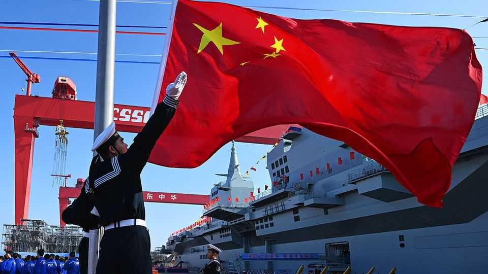

America’s lack of shipbuilding prowess is a problem for its navy
China’s commercial shipyards provide it with a big advantage

Aug 6th 2026
“The floating bulwark of our island” is how William Blackstone, an 18th-century British politician, described the Royal Navy. These days it is America, not Britannia, that rules the waves. Yet the country’s naval dominance is increasingly under threat, as China has built a floating bulwark of its own.
China’s efforts to control what it regards as its territorial waters (despite the objections of its neighbours) and project power globally have demanded a fast-expanding navy. This has grown in short order from a small coastal-defence force to become the largest navy in the world, according to a report in 2020 by what was at the time America’s Department of Defence. China’s 350 “battle force” vessels—including battleships, aircraft carriers, minesweepers and auxiliary craft—outnumbered America’s 293, a figure that had barely increased in two decades.
China’s plans to expand its armada to 435 ships by 2030 seem plausible. America’s hopes of adding 58 to its fleet by 2031—and the construction of a “Trump Class” nuclear-powered battleship, proposed by the president last year—are far-fetched. That is because China has something America sorely lacks: its rise as a naval power has been underpinned by a vast commercial-shipbuilding industry.
After the second world war Europe’s world-leading shipyards were eclipsed first by Japan, using cheap steel and labour along with new manufacturing methods, then by South Korea. More recently it is China that has come to dominate. Over the past 25 years its share of global shipbuilding tonnage has risen from 5% to over 50%. America’s commercial-shipbuilding industry, by contrast, barely registers, hampering the ability of its navy to keep pace.
Matthew Funaiole of the Centre for Strategic and International Studies, a think-tank in Washington, explains that China’s commercial-shipbuilding industry is “closely intertwined” with its navy. The fusion of military and civilian activities keeps Chinese shipyards active. If commercial orders slow, for example, dry docks can accommodate naval work, improving the return on investment. And although warships are far more complex than, say, container ships, the two share much in common, from steel structures and pipework to engines and propellers. The underlying “platform” across vessels has many commonalities, points out Marzio Forlini of Bain, a consultancy.
That is why Europe, which maintains a vibrant commercial industry for specialist vessels—such as cruise ships, icebreakers and support craft for offshore energy—still has a successful naval sector that not only supplies its own forces but exports around the world. Civilian shipyards provide more than just capacity, notes Michael Potter of Accenture, another consultancy. They are where the essential skills needed to incorporate weapons systems, radars and other bits of defence kit are honed. Welding, pipe-fitting and cable-pulling a commercial vessel prepares labour forces to work on complex naval ships as well.
Pierroberto Folgiero, boss of Fincantieri, Europe’s biggest shipbuilder, agrees that the two industries are highly complementary, pointing to manufacturing skills, the availability of shipyards and overlapping supply chains. Mr Folgiero notes that the cruise ships which are Fincantieri’s speciality are hugely complicated, requiring amenities such as power plants and water systems to support 10,000 people (and 20 restaurants). The Italian argues that if governments want naval shipbuilding, “you have to cultivate—you have to protect—civilian shipbuilding”.
In America, however, past efforts to do so have backfired. The Jones Act, a measure introduced in 1920 to propel the domestic shipbuilding industry, has instead acted as an anchor. It obliges transport between domestic ports to be conducted on American-built vessels (with American crews). The result has been insufficient competition and spiralling prices: vessels manufactured in America can cost many times a similar foreign-made one. The Jones Act—which has been temporarily suspended to allow foreign tankers to help transport oil in a bid to lower petrol prices in America—is a big part of the reason why in 2025 the country accounted for only 0.03% of global tonnage.
America’s lack of commercial-shipbuilding prowess has proved costly for its navy, whose shipyards have been unable to deliver vessels on time and on budget. Two aircraft carriers under construction by a subsidiary of Huntington Ingalls Industries, the country’s biggest military shipbuilder, were scheduled for delivery by March 2028 but will now be over two years late. Four-fifths of all programmes to deliver frigates, submarines and other naval vessels are behind schedule.
Politicians are aware of the problem. The bipartisan ships for America Act proposed in 2025 aims to increase the civil fleet by 250 vessels over ten years, using subsidies and various other measures. In February the government launched the Maritime Action Plan, which includes the creation of a $20bn fund for investments in shipbuilding. It has also rolled out an initiative (creatively titled “Make American Shipbuilding Great Again”) to attract skills and investment from South Korea. That effort shows some promise: last month South Korea’s three biggest shipbuilders announced 15 co-operative projects to upgrade or build new shipyards in America. Some lawmakers have even proposed changing America’s procurement rules to allow naval vessels to be constructed by allies such as Japan or South Korea.
Most observers, however, agree there is no short-term fix to the problem. Indeed, many are sceptical that America’s commercial-shipbuilding sector will ever again provide much support to its navy. That ship may have sailed. ■